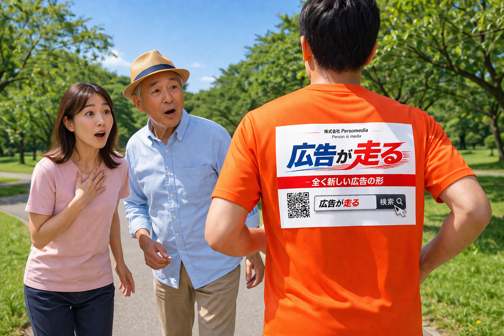
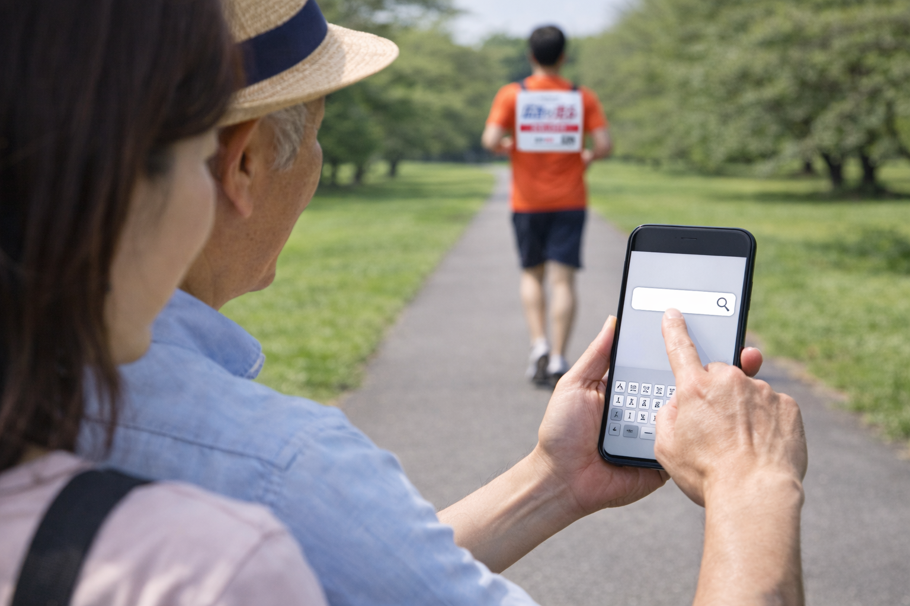
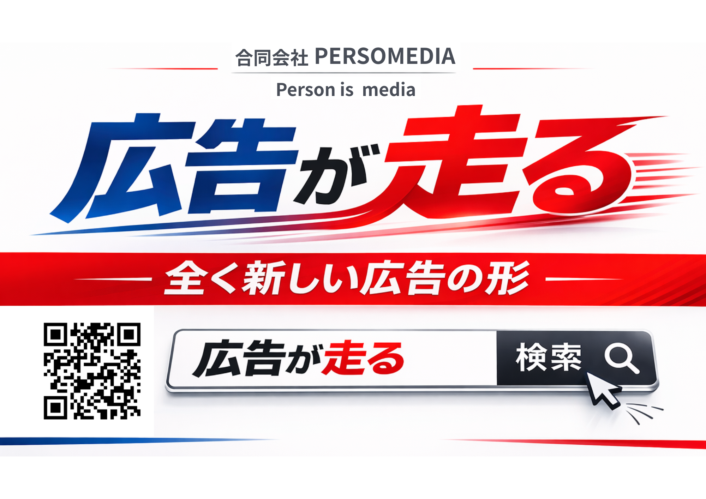

普段のランに目的を足したい
走る習慣はあるけれど、もうひとつ続ける理由がほしい人に向いています。
Issue
走る習慣はあるけれど、もうひとつ続ける理由がほしい人に向いています。
ただ走るだけでなく、自分のアクションが街の役に立つ実感を持てます。
走った記録や景色の投稿が、広告の価値づくりにもつながります。
About
指定された広告ゼッケンを身につけて、いつものコースを走ります。 特別な技術やノルマではなく、日常のランニングがそのまま参加条件です。

Benefit
目標のない日でも、誰かに価値を届ける意識が加わることでランの継続力が高まります。
参加条件に応じた謝礼や特典を受け取りながら、好きなランニングを続けられます。
走る姿そのものが広告として機能し、地域の事業者や人との接点づくりに変わります。
Why Now
健康のために走る。気持ちを整えるために走る。記録を伸ばすために走る。 その時間はすでに価値のあるものです。
「広告が走る Runner」は、その価値を自分の内側だけで終わらせず、 街や地域の事業者へひらいていく参加型の仕組みです。
Impact
あなたのランが、街で見られ、検索され、話題になる。

Bib Sample

Style
ゼッケンは視認性を重視したシンプルな形式です。普段のランニングウェアに合わせやすく、 初参加でも負担なくスタートできます。
Flow
フォームからランニング頻度や活動エリアを登録します。
条件に合う案件が決まったら、着用する広告ゼッケンを受け取ります。
街で走り、必要に応じて活動報告やSNS投稿を行って完了です。
FAQ
毎日のラン習慣がなくても応募可能です。案件ごとに活動頻度の目安があります。
案件によって異なります。街での露出のみで完結するものと、投稿を含むものがあります。
普段から走る習慣があり、地域との接点や新しい参加体験に前向きな人に向いています。